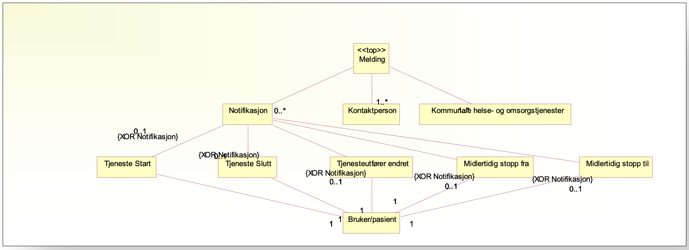
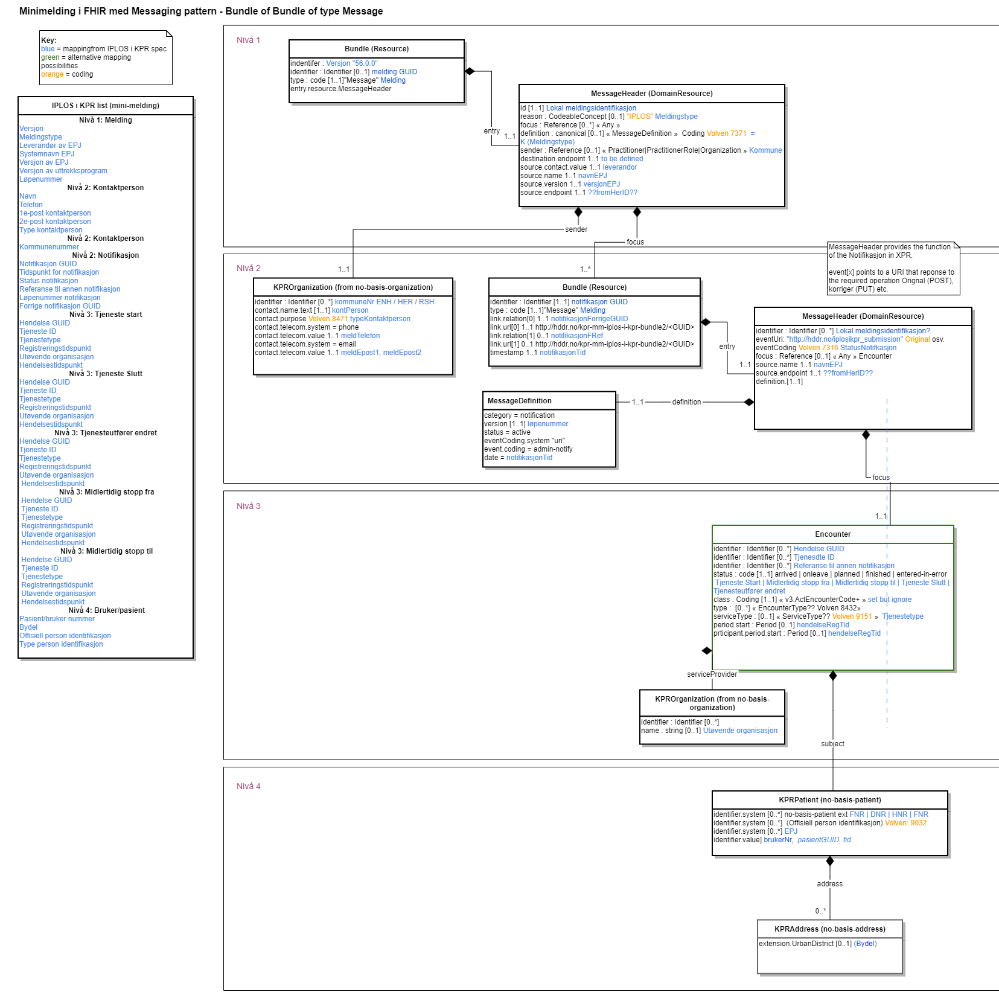

0.1.0 - ci-build
KPR_MM_IG - Local Development build (v0.1.0). See the Directory of published versions
| Owner: | Helsedirektoratet |
| OwnerDepartment: | DHHR Avdeling Helseregistre |
| Author: | Andy Harrison (innleid) |
This IG is an example of how the exeisting XPR ‘mini-melding’ could be modelled with FHIR Resources and described using FHIR Shortyhand (FSH). The original specification can be found here: iplos-56.0.0/XPR(ipl).xsd
The (diagram below)[#id1] shows the data content from the original alongside an equivalent FHIR structure.
To model the levels of the xpr structure this version uses a top level FHIR Bundle resource of type “Message” to represent the “Melding”. In order to model one-to-many Notifications within the “Melding” we use a new Bundle of type “Message” under the Melding bundle. This Bundle is described using a MessageHeader, MessageDefinition resources and provides ‘focus’ for 1 payload “Encounter” resource.
Diagram showing the current mini-melding structure: 
Note that this message is a fire-and-forget type of message and is not RESTful. We have therefore not followed the FHIR messaging guidance “Messaging using FHIR Resources”. A re-development of Norway’s messaging to health registers could benefit from reviewing the messaging protocols used in relation to FHIR messaging.
XPR uses the statusNotifikasjon to determine if the message is an original or a correction. In this FHIR example we have used an Event in the Notifikasjon MessageHeader to target an endpoint URL.
Example:
XPR Minimelding has 5 types of notification which are defined within the Encounter resource using the standard FHIR status flags:
The following diagram shows the chosen FHIR data model with the equivalent data fields from the XPR format: 
Internal notes and files can be found in Confluence.
TODO Checklist: